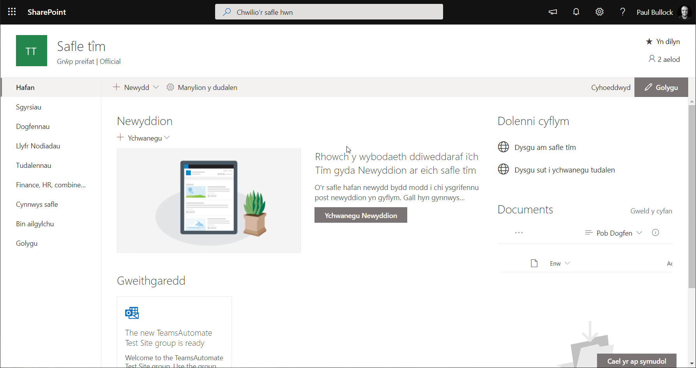

Testing user preferred language of SharePoint site
Summary
Are you testing SharePoint multi-lingual features? And want a quick way to switch languages on a site for a particular user or yourself; this can be useful when testing the modern multi-lingual features in SharePoint if you want to check the quality of the pages translated.
This script that changes the MUI setting for a user within the User Information List to update the user with the appropriate language tag.

Connect-PnPOnline https://<tenant>.sharepoint.com/sites/<site>
Get-PnPListItem -List "User Information List" -Id 7 # Me
# -OR- #
$userEmail = "paul.bullock@mytenant.co.uk"
$CamlQuery = @"
<View>
<Query>
<Where>
<Eq>
<FieldRef Name='EMail' />
<Value Type='Text'>$userEmail</Value>
</Eq>
</Where>
</Query>
</View>
"@
$item = Get-PnPListItem -List "User Information List" -Query $CamlQuery
# Language Reference: https://capacreative.co.uk/resources/reference-sharepoint-online-languages-ids/
$item["MUILanguages"] = "cy-GB" #"en-GB"
$item.Update()
Invoke-PnPQuery
Source Credit
Article first appeared on Testing user preferred language of SharePoint site | CaPa Creative Ltd
Contributors
| Author(s) |
|---|
| Paul Bullock |
Disclaimer
THESE SAMPLES ARE PROVIDED AS IS WITHOUT WARRANTY OF ANY KIND, EITHER EXPRESS OR IMPLIED, INCLUDING ANY IMPLIED WARRANTIES OF FITNESS FOR A PARTICULAR PURPOSE, MERCHANTABILITY, OR NON-INFRINGEMENT.